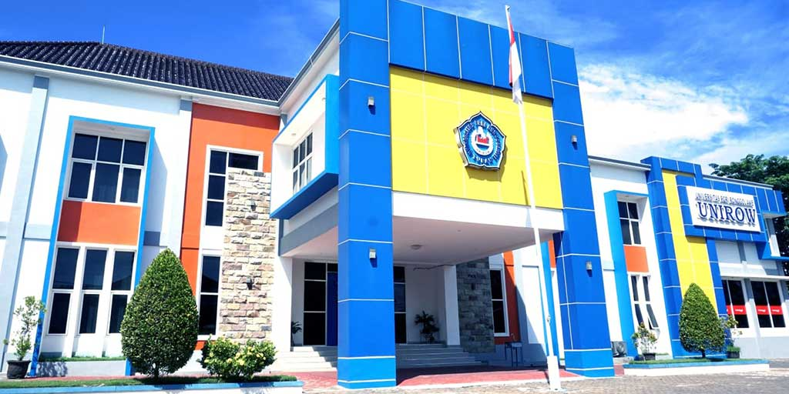

Universitas PGRI Ronggolawe Tuban (UNIROW) merupakan salah satu perguruan tinggi yang berperan penting dalam mencetak calon guru profesional melalui Program Pendidikan Profesi Guru (PPG).

Universitas PGRI Ronggolawe Tuban atau UNIROW merupakan salah satu perguruan tinggi swasta di Kabupaten Tuban, Jawa Timur, yang memiliki komitmen tinggi dalam mencetak lulusan berkualitas, berkarakter, dan profesional.
Sebagai Lembaga Pendidikan Tenaga Kependidikan (LPTK), UNIROW berperan aktif dalam mempersiapkan calon guru profesional melalui Program Pendidikan Profesi Guru (PPG).
UNIROW menyediakan lingkungan belajar yang kondusif, didukung dosen profesional, fasilitas pembelajaran yang memadai, serta berbagai kegiatan akademik dan nonakademik.
Melalui Program PPG Prajabatan, mahasiswa memperoleh pengalaman belajar yang terintegrasi antara teori dan praktik di sekolah.
Menjadi perguruan tinggi unggul, inovatif, dan berdaya saing dalam pengembangan ilmu pengetahuan, teknologi, dan pendidikan berlandaskan nilai karakter dan budaya bangsa.
1. Menyelenggarakan pendidikan berkualitas dan profesional.
2. Mengembangkan penelitian dan inovasi pendidikan.
3. Melaksanakan pengabdian kepada masyarakat secara berkelanjutan.
4. Membentuk lulusan yang unggul dan adaptif terhadap perkembangan zaman.
1. Mendukung pengembangan kompetensi calon guru profesional.
2. Memiliki dosen berpengalaman dan kompeten.
3. Fasilitas pembelajaran modern dan nyaman.
4. Lingkungan kampus aktif dan inovatif.
5. Mendukung pembelajaran berbasis teknologi digital.